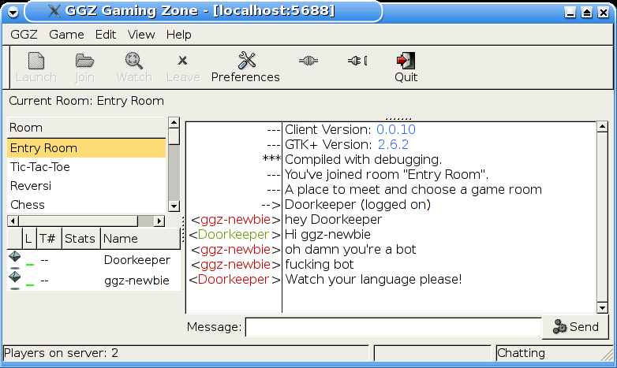
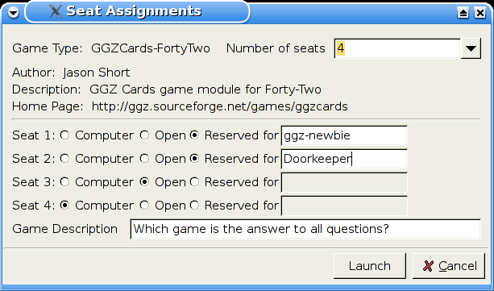

The following options are supported:
ggz://some.ggz.server ggz://me@some.other.ggz.server:5688
The basic client usage can be divided into three parts, with one of which following another. At first, the user logs into a GGZ server. Secondly, a room is entered and if other people are logged in too, chat messages can be sent. Third, in all rooms but the entry room games can be played online, which will also be explained in more detail later on.
Login:
The login window manages profiles, each of which is made up of a login name,
the password (except for guest users), the server name and the server port.
The later two don't have to be configured, they're set to a usable default value.
However in order to obtain a login name, the option named 'first-time login'
must be activated. A password wish can be submitted along with it, but if omitted
a new password will automatically be generated and should be remembered well.
If the login succeeds, the message of the day (MOTD) will be displayed. Since this rarely changes, it can be configured to be hidden after further logins.
Chat:
Just like any other chat client, ggz-gtk provides an input field and an output
message window. Nickname autocompletion, private messages and several other features
are supported.
To the left, there's the room pane (listing all the available rooms and the number of players in them) and the player pane, which for each player of the current room displays a symbol, a statistics and a lag meter. The symbol determines the status: a player can either be a guest player, or registered as normal player, administrator or bot. The statistics are not kept for guest players, but for the others they depend on the gametype associated with the room. Some games support highscores, some support rankings, and some support a win/loss/ties/forfeits scenario.

Playing games:
To start a new game, press the 'launch game' button. This does not only launch
the game, but also offer (depending on the number of games installed) a selection
for the preferred game client, and a table configuration, complete with bots and
reserved seats. To join an already running game, the 'join game' button will
skip the table configuration and put yourself straight into a seat, provided at
least one is still open.
Some games also allow spectators. A click on the 'watch game' button is like joining a game, except that no input is sent to the game server, and to prevent cheating most often even the messages from the server to the client are restricted.
